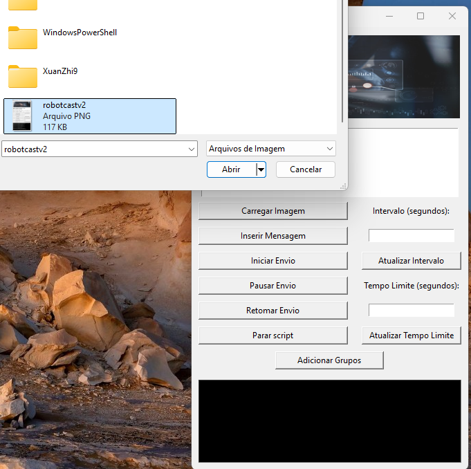

1. Introdução e Perfil
Olá, meu nome é Bruno, sou da cidade de Guarujá-SP, estudante de Engenharia de Software e desenvolvedor em início de carreira. Buscando conhecimentos de forma prática e autodidata, consegui desenvolver um projeto de automação de mensagens para o Telegram que está sendo um marco na minha jornada. Comecei com um simples script, que já era funcional, mas com muito esforço e aprendizado, consegui evoluí-lo para uma aplicação completa, com uma interface intuitiva, controle de acesso seguro via servidor e até serviços de assinatura para clientes.
2. Resumo dos Principais Projetos
Projeto de Automação para o Telegram
O projeto começou como um script básico, que executava automação de mensagens no Telegram. Inicialmente, o foco estava em enviar mensagens automáticas para usuários e grupos, com uma lógica simples de controle de fluxo. No entanto, com o tempo, o projeto evoluiu para uma solução muito mais completa e sofisticada.
Evolução do Script Simples para uma Aplicação Completa
À medida que eu ganhava experiência com Python e aprendia sobre integração com APIs, fui aprimorando o script para adicionar novos recursos. Passei a utilizar a biblioteca Telethon, que me permitiu interagir de forma mais avançada com o Telegram, e a implementar funcionalidades de envio de mensagens automáticas, coleta de dados de usuários e controle de listas de destinatários.
Interface com Tkinter
Um dos maiores avanços foi a criação de uma interface gráfica com Tkinter. Essa interface tornou a aplicação acessível e fácil de usar, permitindo que os usuários interajam com as funcionalidades sem precisar de conhecimento técnico. A interface facilita o gerenciamento de listas e o controle de assinaturas, proporcionando uma experiência de usuário mais amigável.
Controle de Acesso e Serviços de Assinatura
O projeto também se expandiu para incluir um sistema de controle de acesso e serviços de assinatura. Para isso, configurei um servidor em nuvem utilizando Flask, que permitiu autenticar os usuários e controlar o acesso de forma remota. Esse sistema de assinatura foi essencial para criar um modelo de negócios em torno do projeto, permitindo que apenas assinantes autenticados pudessem usar a aplicação.
3. Detalhamento Técnico
Backend com Flask e Node.js
Para o backend, escolhi Flask como framework principal, utilizando sua simplicidade e flexibilidade para criar uma estrutura de autenticação segura e um sistema de gerenciamento de dados. A implementação de Flask no servidor em nuvem foi fundamental para garantir que a aplicação pudesse ser acessada por usuários em redes externas, não limitando seu uso à minha rede local.
Autenticação e Controle de Acesso
Com o Flask, desenvolvi uma estrutura de autenticação que verifica as credenciais dos usuários antes de permitir o acesso às funcionalidades. Isso envolve o armazenamento seguro de dados de autenticação e a verificação de permissões, garantindo que apenas usuários autorizados tenham acesso ao sistema.
Gerenciamento de Dados com Node.js
Node.js foi utilizado para funções de gerenciamento de dados mais dinâmicas e em tempo real. Esse backend híbrido foi útil para balancear cargas e melhorar a eficiência do sistema, especialmente para o controle de assinaturas e o monitoramento de uso.
Frontend com Tkinter
No frontend, o Tkinter foi escolhido por sua simplicidade e compatibilidade com Python, permitindo criar uma interface intuitiva e profissional. A interface permite que o usuário configure e controle as automações de forma prática, com janelas de fácil navegação para gerenciar contatos, enviar mensagens e acessar funcionalidades de assinatura.
Funcionalidades da Interface
- Gerenciamento de Mensagens: Os usuários podem configurar mensagens automáticas e direcioná-las para grupos ou usuários específicos.
- Controle de Assinaturas: A interface inclui um painel de controle para gerenciamento de assinaturas, permitindo um controle de acesso para que apenas usuários ativos tenham acesso à aplicação.
- Facilidade de Uso: Tkinter foi essencial para simplificar a interação do usuário, facilitando o acesso a todas as funcionalidades sem a necessidade de linha de comando.
4. Processo de Aprendizado e Evolução
Automação e Controle de Acesso
Esse projeto representou uma grande curva de aprendizado em automação e controle de acesso. Ao lidar com problemas de autenticação e gerenciamento de usuários, aprendi a implementar soluções de controle de assinaturas e a configurar o Flask para garantir a segurança dos dados. A evolução do projeto me ensinou como transformar um simples script em uma aplicação completa que resolve necessidades reais de automação e comunicação.
Experiência com IAs
No decorrer do desenvolvimento, contei com assistentes de IA que foram fundamentais para solucionar problemas complexos e entender conceitos de backend e automação. Com a ajuda de IAs, aprendi sobre melhores práticas de programação, otimização de código e integração de novas funcionalidades, acelerando meu aprendizado e permitindo que eu avançasse no projeto.
Expansão para Mobile
Atualmente, estou trabalhando na integração da versão desktop para uma versão mobile, utilizando ferramentas de criação de aplicativos móveis para adaptar a aplicação a dispositivos móveis. Esse processo tem sido desafiador, mas me proporciona um aprendizado valioso em novas tecnologias e abre novas possibilidades para o projeto.
Galeria de Imagens
Abaixo estão algumas capturas de tela do meu projeto:
Figura 1: Interface principal construída com Tkinter.

Figura 2: Pop up inicial antes de abrir qualquer outra coisa, para que apenas quem estiver com usuário/senha ativos possa ter acesso à aplicação.

Figura 3: Demonstração da solicitação das API's que permitirá o uso da aplicação, sendo necessário preenchê-las uma única vez.

Figura 4: Botão que chama o explorer do usuário sem ter a necessidade de que ele copie o caminho da imagem, trazendo mais facilidade e comodidade no uso da aplicação.

Figura 5: Este pop up é pra confirmar que a imagem foi armazenada com sucesso e está pronta para ser enviada.

Figura 6: Aqui há um campo para inserir os textos. Semelhante à função de adicionar imagens, da mesma forma, ao pressionar o botão de Inserir Mensagem(com a mensagem no campo), a mesma é armazenada e pronta para o envio.
Figura 7: Ao clicar em Adicionar grupos, é aberto automaticamente um arquivo .txt para que o usuário possa adicionar quantos links quiser, e a aplicação consultará essa lista para enviar as mensagens nos grupos.
Figura 8: Esta funcionalidade permite ao usuário escolher em que período(em segundos) a aplicação repetirá as mensagens, e logo abaixo também tem a funcionalidade de tempo limite, que é onde o usuário selecionará o tempo total em que ocorrerá essas repetições.
Figura 9: Tela de Log simples na parte inferior da interface, para que o usuário saiba o que está ocorrendo com a aplicação em tempo real.
Figura 10: Imagem demonstrando a aplicação em funcionamento, e como a mensagem chega no Telegram, aceitando vários tipos de emojis.